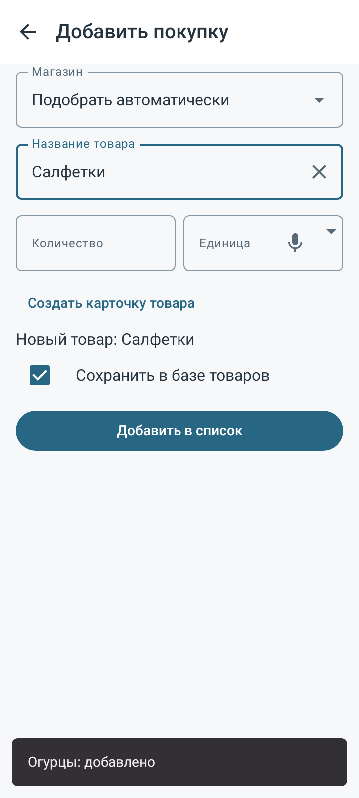
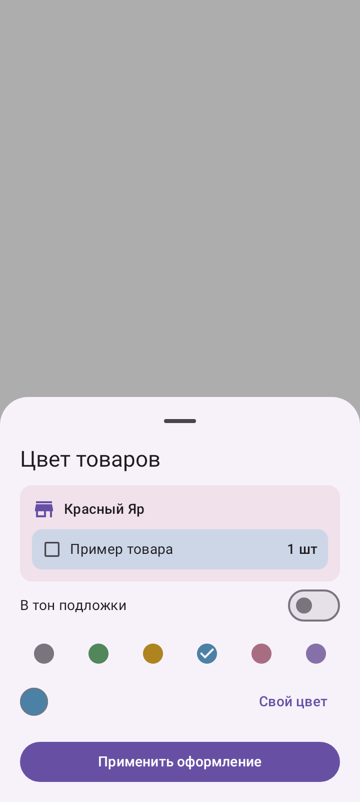
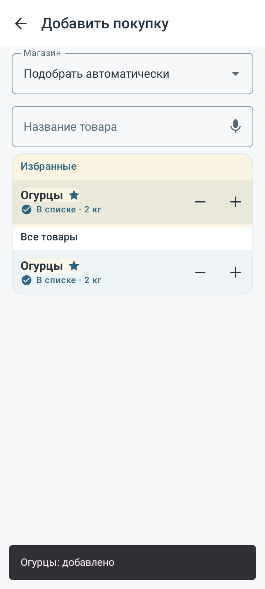
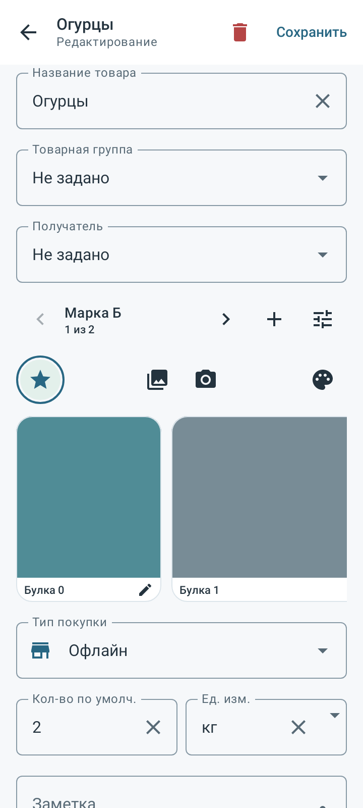

Проверка всего набора: 1473 сценариев /118 классов,54 новых.14 синтетических снимков API28/35; физический телефон не проверен.
Манифест · JUnit · Исходники · Методика
# Проверка0.29.0 Общий ввод, обратимое быстрое добавление, фотографии и варианты товара. Room26, полная копияZIP24. **1473/1473 уникальных сценариев в 118 полных классах**, включая54 новых, итог failures/errors/skipped=0. Полный исходный набор1471 и расширенный повтор всех 473 сценариев в 32 классах на окончательном коде. В полном наборе был 3 сбой ожидания готовности UI. Во время дополнительного аудита исправлены выбор варианта для конкретной точки и видимость отключённых вариантов по городу магазина; добавлены2 интеграционных сценария. Четыре файла приложения и четыре тестовых файла изменены после полного набора; весь затронутый подбор/каталог/магазины/списки/назначения/города проверен повторно вместе с APK и lint. Старые сценарии и проверки данных сохранены. Это полный исходный набор плюс расширенная регрессия, а не один полный прогон на финальном коде. Предварительные попытки не включены в итоговые числа. Release APK и lint успешны: 0 ошибок, 85 предупреждений, 7 подсказок. 14 синтетических PNG API28/35 просмотрены. Все 349 файлов приложения/тестов/схем/сборки неизменны после начала расширенного повтора; точные восемь изменённых путей и области повторной проверки приведены в манифесте; 41 прежних APK/личных материалов сохранены по хешам. APK0.29.0(39), пакет `com.spisokryadom.app.next`, прежний сертификат. SHA256 `5a1b06c37d2c95b563fdd92dd0909cbd5807f8aea4052178e2d069145ed0ba8c`. Установка поверх текущего .next приложения, импорт базы не нужен. ## Изменения - В редактируемых текстовых полях микрофон сменяется крестиком очистки. Голос заполняет черновик, отмена распознавания его сохраняет. Числа очищаются без голосового ввода; списки выбора сохраняют стрелки. - В подборе есть минус, последнее уменьшение удаляет позицию. Метка и действие используют один список/магазин/точку; уменьшается последняя изменённая строка этого товара или его варианта. - До5 фото каждого варианта: горизонтальный ряд, подписи и порядок, первая основная. Удаление подтверждается; очистка файлов учитывает все фото несохранённого черновика. - Единая карточка товара с вариантами. Общие имя/группа/получатель/избранность/акцент; собственные параметры, фото, цены и магазины. Варианты переключаются свайпом или стрелками, закупка хранит конкретный вариант. - Доступность и приоритет вариантов отдельны по городам. Правки нескольких городов сохраняются атомарно, при переключении города черновик не теряется. По желанию выбранный вариант запоминается первым в текущем городе. - Главная, отдельные списки, копирование, виджет и ZIP работают с настоящими вариантами; в каталоге остаётся одна строка на товар. Старые ID/покупки/миграции сохранены. - Подложка и выделение товаров магазина используют одинаковые цветовые кнопки. В общей панели цвета — переключатель «В тон подложки» и собственная палитра. ## Знания проекта Проверены AGENTS,03,11 и обязательный минимум12:01/08/09/13. Обновлены01,05–09,11–14,41,42,45,54,57, новый58, AGENTS, README, START_HERE и руководство пользователя. Карта архитектуры/контракт и результаты согласованы с Room26/ZIP24; прежнее текущее состояние сохранено в history. ## Границы проверки Native Robolectric, API28/35 там, где указано в Config. Физический телефон, настоящий сервис распознавания, Gboard, OEM-хост виджета и внешняя галерея не проверены. Намерения запуска/отмена камеры и голоса, реальные Room-транзакции, миграции, фотографии и ZIP проверены локальным стендом. Основной вариант сохраняет исходную идентичность товара; отдельно удаляются дополнительные варианты. Разовая позиция должна быть явно сохранена в каталоге перед созданием вариантов. Создание/удаление варианта и применение его городских приоритетов — отдельные подтверждённые действия; Back карточки их не откатывает. Импорт полной базы заменяет её, переносимый список — отдельный протокол. Публичный JUnit содержит только имена, длительности и статусы. Личные базы/фото/ключи и служебные потоки JUnit не публикуются. [Манифест](verification.json) · [JUnit](junit.xml) · [Хеши исходников](source-seal.json) · [Визуальный отчёт](report.html).



